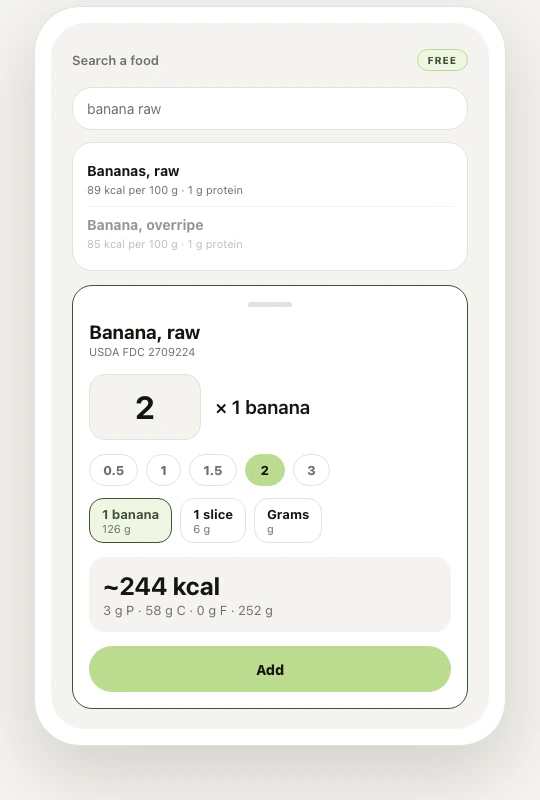

01
So schnell wie du isst
„Zwei Bananen“ statt „252 Gramm“.
Foto, Barcode, Suche oder kurze Beschreibung. Mengen gibst du in Stück, Portionen oder Gramm an — so, wie du sie tatsächlich kennst.
- Vier Wege zum Erfassen
- Portion vor dem Speichern korrigierbar
- Suche und Barcode ohne KI-Kosten
